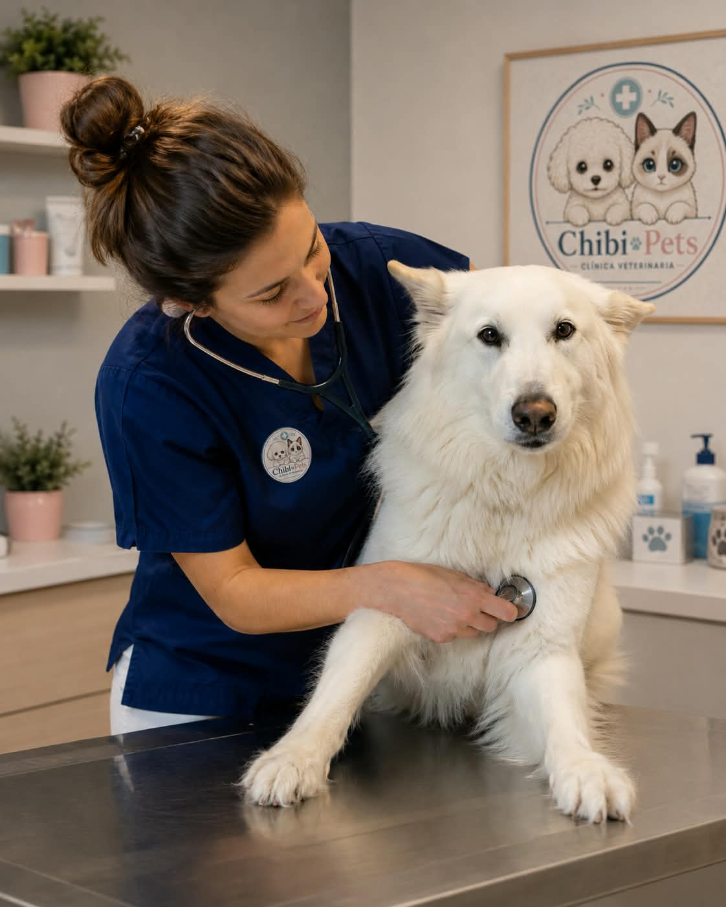
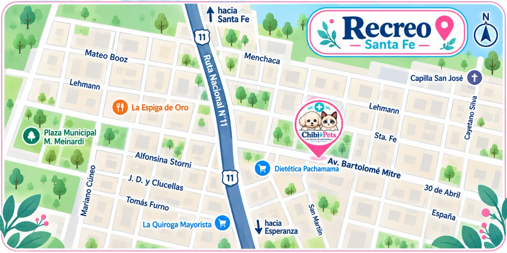

ATENCIÓN CON CALIDEZ
Porque detrás de cada pequeño paciente hay un vínculo, una historia y alguien que espera verlo bien.
En Chibi Pets acompañamos con atención cercana, respeto y cuidado en cada etapa.
ATENCIÓN CON CALIDEZ
En Chibi Pets acompañamos con atención cercana, respeto y cuidado en cada etapa.

Cada paciente necesita un cuidado diferente. En Chibi Pets combinamos experiencia, prevención y atención cercana para acompañarlo en cada etapa.
Consultas, controles, vacunación y prevención para cuidar su salud día a día.
Evaluación y tratamiento de lesiones, procedimientos quirúrgicos y seguimiento durante la recuperación.
Atención ante situaciones que requieren asistencia veterinaria inmediata, durante todo el día.
Turnos con un día de antelación. Urgencias sin turno
| Días | Horario |
|---|---|
| Lunes a Sábados | 09:00 a 20:00 |
| Domingos y feriados | Cerrado |
| Todos los días | Urgencias 24 horas |

Porque cada paciente merece ser acompañado con respeto, atención y cercanía.
Escuchamos y acompañamos a cada familia en cada consulta.
Cada animal es único y merece un cuidado pensado para sus necesidades.
No nos quedamos solo con la consulta: acompañamos su evolución.
Contamos con un equipo de especialistas dedicados al bienestar de tu mascota.
Estamos para acompañarte y cuidar de ellos.